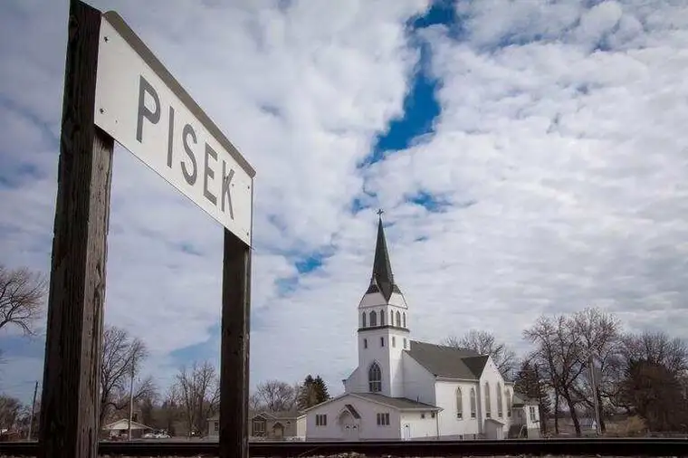
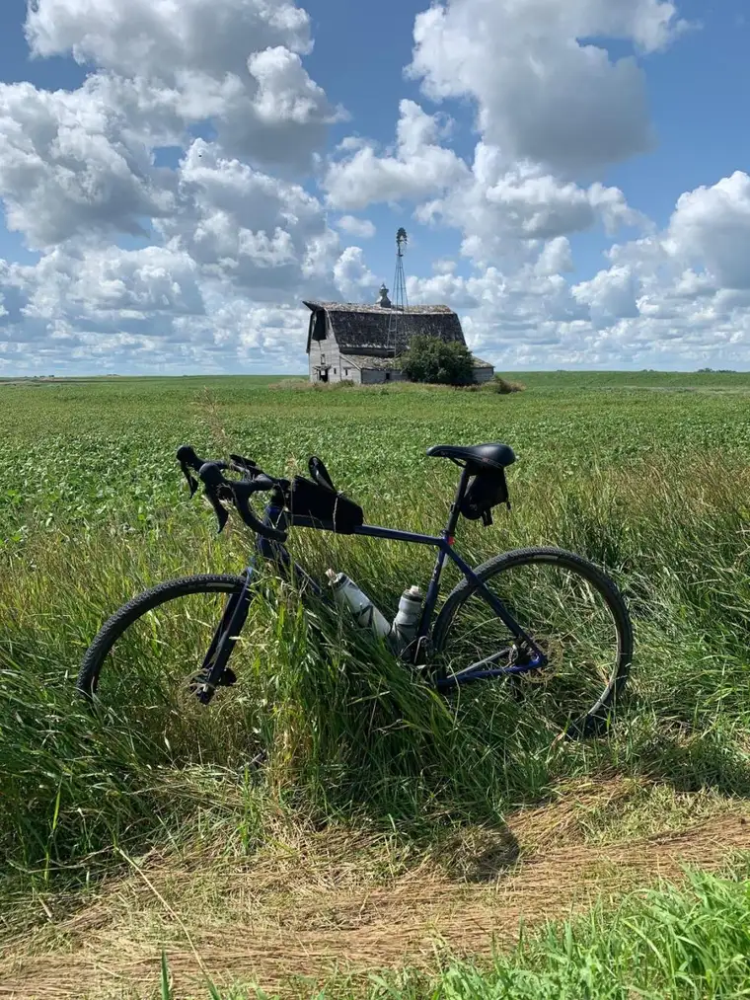

PISEK, N.D. — The quiet, humble town of Pisek is about to get loud and proud.

Loud with the sounds of church bells, children’s voices and the churning of bike tires on gravel. Proud as locals mix with out-of-towners to race bikes in rural spaces with friendly faces.
Organizers expect the first Nepomuk Narly Gravel Grinder Bike Race to bring a burst of positivity to the area for a day — and beyond.
“This year, with politics in the world, the drought and COVID, there’s been so much heaviness everywhere you go,” says the Rev. Jason Lefor, pastor of St. John Nepomucene Catholic Church, the brainchild of the event. “I wanted to do something to promote life in my parish, and in my town.”
It’s a merging of his worlds, he says, with his love for the people of Pisek, who draw from a rich, largely Czech heritage, along with his longtime affinity for bicycling.

The name for the event borrows from the church’s patron saint, St. John Nepomucene, who hails from Nepomuk, a Czech Republic city where the saint was born, around 1340, known for its gravel. “Like Pisek, which actually means ‘gravel’ in Czech,” Lefor notes.
The race will commence with the ringing of church bells. Over $7,000 worth of real silver and gold bars will be given as top prizes. Racing options include 25- and 50-mile loops, and for less-experienced riders, a 6-mile ride traversing the city landmark Pengilly Hill, ending with ice cream at the local J-Mart, well-known for its Christmas candy.
Food trucks and a craft fair will also be on hand, along with inflatable games and face painting for children from 10 a.m. to 2 p.m.
What’s a gravel grinder?
The event joins a growing craze of cyclist groups across the United States seeking out gravel roads for riding with road bikes fitted with larger tires for more rugged paths.
Simon Murphy of the Grand Forks Ski and Bike Shop says gravel cycling provides a way to escape busy, high-traffic roads for places not normally traveled. “All of these gravel races are popping up in small towns.”
Recently, he took part in the Lawton Loop, also in North Dakota, involving 75 cyclists and their families, and earlier this summer, he did the Unbound Gravel race in the little town of Emporia, Kan.
“That event brings in 10,000 cyclists in one weekend in June, and all of these ex-world-tour, pro-athletes come and race, put themselves through a bunch of pain and have fun.”

Through his work, Murphy guides gravel rides of around 30 people of all ages every Monday night, and says the community aspect makes gravel events unique. Most bikes can be transformed for gravel, he adds, with gravel providing a smoother ride than most expect.
“Especially in Pisek. The gravel is really hard-packed, so it’s not as aggressive as you might think.”
Half the city of Pisek, population 120, has signed up for the gravel race, he says, with nearly 60 businesses vowing their support.
Not just a dot on the map
Rachel Bina says places like Pisek are too often just “dots on the map that people drive by,” but her city’s interesting history and small-town sensibility can be a refreshing reprieve.
“We’re looking forward to seeing people from outside the area, too, and want them to feel welcomed.”
A few weekends ago, her son, Jack, 11, was out warming up for the ride with buddies Gabe Shirek and Simon Zikmind. The boys plan to tackle Pengilly Hill.
“It’s definitely going to be scary because we have to go down a big hill, but it’s going to be really fun,” he says.

Rachel says the whole family will take part in the race, including her other four kids, “though I highly suspect my husband will be riding alongside us in his four-wheeler.”
She appreciates how Lefor has vitalized many in readying for the event.
“He’s a spiritual leader but has also inspired people physically,” to get fit, she says.
Lindsay Jelinek has been busy organizing the craft show. “My husband’s the mayor—that’s how I got roped into some of these things,” she says, laughing.
Her involvement at church as a faith-formation teacher also played a part.
“When Father asked if we would like to help, at first we were like, ‘A bike race? Hmmm, OK.’ It’s the first time we’d heard of anything like this. We’re just small-town Pisek,” she says. “But anything to get us on the map is great.”
Despite it being harvest time in a rural, farming community, she says, volunteers have come through, with three parishes joining forces, including nearby Sts. Peter and Paul’s in Bechyne and St. Joseph’s in Lankin.
Craft offerings, she says, will include drop-pour painting, along with homemade doll clothes, wooden flower boxes, a variety of metal-work creations, and baked goods.

Small but mighty
The driving question behind the event, Lefor says, was, “What can we do to rejoice or have more life?”
He thought of the town’s 1982 centennial celebration, and a letter President Ronald Regan wrote to Pisek citizens: “The spirit which has built and sustained your community reflects the energy which has forged America into a land of wonder. As a community held by fellowship and goodwill, Pisek has become ‘home’ to many who love it dearly and shines as an example of our blessings of liberty and freedom to those around the world.”
As noted in a marketing piece for the event, in 1882, surveyors laid out the site for the town, so named because it is built on a sand ridge, and many of its original inhabitants came from Pisek, Czechoslovakia.
“There are all of these tiny towns, but those of us who live here, we have great pride in the people, and then we have this gorgeous church, too, with a great history,” Lefor says.
St. John Nepomucene’s Church houses a painting by artist Alphonse Mucha, a Czech artist who lived in Paris during the Art Nouveau period and became well-known after the painting’s creation.
Lefor says he’s enjoyed putting the event together, including designing the “mascot,” using the face of St. John Nepomucene.
“He has his finger to his lips, because he was known for having died keeping the seal of Confession,” he says. “So, it’s a great way to promote the faith, too.”

Pisek, N.D., will host the first Nepomuk Narly Gravel Grinder Bike Race on Saturday, Oct. 2, 2021. Special to The Forum
Encouraged by the city’s enthusiasm, he hopes the event will become an annual celebration.
One neighbor is donating cowbells, which people will ring as the riders return. The local Sand Bar lounge will keep one bell with the name of the winner, who will get “bragging rights” for a year, Lefor notes.
“We’re trying to draw people from all over the U.S., and so far, people are responding,” he says, noting one coming from Colorado who races in larger events across the country. “We’re looking forward to meeting some of these personalities, and welcoming them to Pisek.”
Lefor says riding up a difficult hill in his own youth ignited his interest in bike riding. He’s hoping the same will happen to participants of the Nepomuk Narly.
“Everyone has been very generous, throwing in their spirit and time behind it,” he says. “Maybe this can be a way for local people to start an identity and get a little (positive) fever going.”
[For the sake of having a repository for my newspaper columns and articles, I reprint them here, with permission, a week after their run date. The preceding ran in The Forum newspaper on Sept. 24, 2021.]